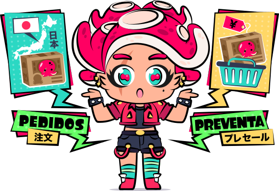
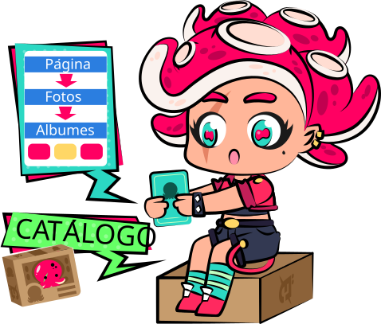
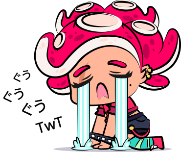
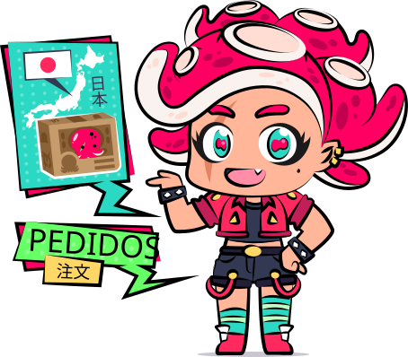
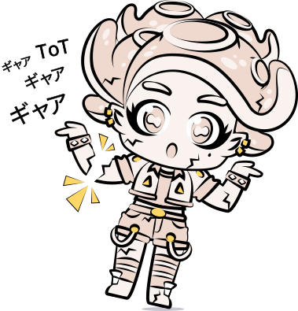

FAQ - Preguntas frecuentes
Tal vez no podemos resolver tus dudas existenciales, pero Umi-Chan está aquí para guiarte y explicarte cómo funciona la dinámica y logística de compras en nuestra tienda.
Cómo comprar
Solicita la compra o apartado de la figura que quieres en alguna de nuestras redes sociales, ya sea Facebook, Instagram o por Correo Electrónico.
Nosotros nos encargaremos de corroborar la disponibilidad y el precio de la figura que buscas y te brindaremos la información necesaria para continuar con el proceso de compra.

Catálogo
Empezamos a subir las figuras que iban saliendo en preventas a nuestra página web a partir de junio 2022; puedes ver nuestro catálogo anterior organizado en álbumes por fecha de salida aquí.
Sí buscas alguna figura que no esté en nuestro catálogo o que ya salió nos lo puedes hacer saber o nos puedes compartir foto de la figura que buscas para revisar si está con alguno de nuestros proveedores y brindarte información.

Preventas
Las preventas se solicitan con el 10% de su costo -la cantidad mínima para apartar una figura es de $250 pesos- y se liquida en la primera quincena del mes de su fecha de salida.
¿Hay algún límite de preventas?
Nope, ¿quiénes somos nosotros para limitarte? >w< puedes solicitar todas las preventas que quieras dando el apartado de la figura, sólo asegúrate de poder cubrir los gastos a tiempo o de lo contrario se cancelará la venta y perderás el apartado.
¿Cuándo va a llegar mi preventa?
Una vez que sale oficialmente la figura tarda alrededor de 2 a 4 semanas en llegar (el tiempo de llegada varia según aduana o el servicio de paquetería), nosotros te estaremos avisando cuando la envíen para que lo tomes en cuenta y vayas liquidando; si liquidaste tu figura en tiempo y forma te avisaremos cuando ya esté en nuestras manos para proseguir con la entrega o envío.
¿Qué hago si me raptaron los ovnis y no podré pagar la preventa en su fecha de salida?
Qué afortunado, por favor llévanos contigo -ok, no-
Tratamos de ser comprensivos y empáticos con nuestros darklientes, sí nos expones tu situación (porque también nos gusta el chisme) podemos acordar un plazo para pagar.
En realidad no me raptaron los ovnis, sólo necesitaba más tiempo para pagar...
Ok, nosotros decidimos creer y confiar en ti, pero si no se liquida la figura en el plazo que acordamos se cancelará tu pedido.
Se agotó la preventa que quería, además de llorar, ¿qué hago?
Puedes acompañar tus lágrimas con unos taquitos o un pan.
En algunos casos se puede solicitar la preventa con pago completo (a veces se puede solicitar con la mitad de su costo, todo depende de nuestros proveedores) o puedes esperar a que salga la figura para traerla bajo pedido.

Pedí una figura, ya pasó su fecha de salida y todavía no ha llegado TwT
Las figuras en preventa pueden sufrir retrasos por causas ajenas a nosotros, ya sea por problemas de manufactura, atrasos en tiempos de entrega por parte del distribuidor o retenciones de aduana. Recomendamos invocarnos para preguntar el estatus de tu pedido y así saber si ha habido algún cambio en la fecha de salida de tu preventa o algún retraso del envío.
Atrasaron la preventa de mi waifu favorita, ¿qué hago? TwT
Ser paciente y esperar; puedes cancelar, pero se pierde el apartado de tu figura. Los atrasos en fechas del fabricante son algo que sale de nuestro control, siempre agradecemos la empatía y comprensión.
Pedidos
Si deseas adquirir alguna figura que ya salió la podemos traer especialmente para ti bajo pedido.
Si está disponible hacemos la cotización y te brindamos los detalles y costo n_n' para solicitarla das la mitad de su costo, nosotros la mandamos pedir a Japón y pagas el resto a su llegada.

¿Cuánto tiempo tarda en llegar una figura bajo pedido?
El tiempo promedio de espera es de dos semanas (a veces puede variar un poco dependiendo de cómo se encuentre el servicio de envíos del país).
¿Pueden conseguir otros artículos de colección?
Depende del tipo de artículo que busques; nos especializamos en figuras de colección, pero a veces podemos hacer pactos con satán para poder traer merchandising de importación japonesa.
¿Tengo que pagar impuestos? D:
Nope, una vez que se te da el precio, queda fijo.
¿Me pueden dar más tiempo para liquidar mi pedido?
Sí, siempre y cuando nos informes el retraso de tu pago para acordar un plazo para pagar.
Garantías
¿Es seguro comprar con ustedes?
Nuestro compromiso es con el darkliente, nos enfocamos en brindar atención y servicio de calidad, tenemos más de 10 años vendiendo figuras. Puedes revisar los comentarios y recomendaciones de algunos de nuestros darklientes aquí.
¿Las figuras son originales?
Nuestros proveedores son distribuidores oficiales así que todas las figuras son originales, no vendemos replicas ni bootleg.
¿Los precios son fijos?
Una vez que apartas tu figura el precio queda fijo (incluso si pasa por aduana), Darko Store se encarga de absorber esos gastos.
Sólo en casos extraordinarios podría cambiar el precio, como la devaluación del peso ante el yen o cambio de dimensiones del fabricante y en dado caso se te estaría notificando.
¿Mandan comprobante de pago?
Sip, enviamos un comprobante en PDF de la compra a tu correo electrónico. Es importante que nos avises cada vez que realices algún pago para actualizar tu cuenta y si en un lapso de 48 horas no te ha llegado la actualización a tu correo por favor avísanos para revisar qué pasó y dar seguimiento.
Mi figura pasó por Chernobyl y llegó deforme TwT
En caso de que tu figura llegue con defectos de fabrica nos puedes avisar para contactar al fabricante y revisar si aplica o no para un cambio.
La figura que quiero comprar dice que es ‘frágil’
En cuanto a figuras de polyresina y materiales delicados nuestros proveedores nos piden mencionar que son un poco frágiles y aunque vienen bien protegidas no se hacen responsables si esta llegara a tener algún detalle o imperfecto ocasionados por un mal trato del servicio de paquetería o aduana.

Preguntas generales
¿La venta puede ser por Mercado Libre?
Sólo si se trata de productos que tenemos en stock y se te cobraría comisión.
¿Tienen figuras en stock?
En general las figuras que traemos son bajo pedido (nuevas y seminuevas), pero a veces nos damos el lujo de pedir algunas figuras extra o nos cancelan preventas de último momento que de alguna manera tienen que salir. Aquí encontrarás lo que tenemos en stock a un costo accesible o con descuento.
¿Tienen tienda física?
Nos encantaría tener tienda física TwT pero por el momento nuestra ventas son en línea.
¿Hacen envíos internacionales?
No es algo usual, pero con tu código postal podemos cotizar el envío a tu país.
Dudas
Si tienes alguna duda o comentario referente a nuestro proceso de compra o términos y condiciones de servicio, puedes contactarnos en nuestras redes sociales o por correo electrónico.